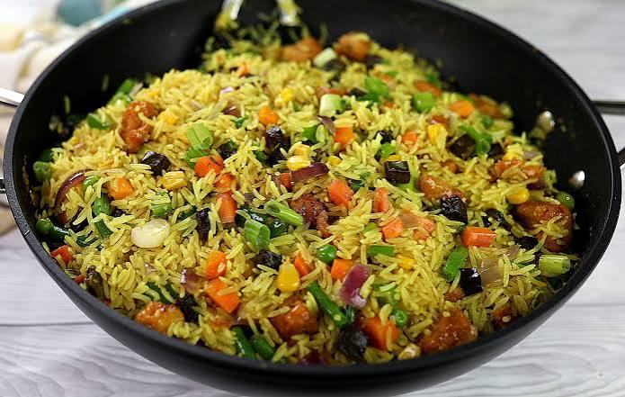

Home
Fried-rice Recipe

Description
Fried rice is a flavorable dish made by stir-frying cooked rice with vegetables, eggs, and your choice of meat or seafood.
It is a quick and satisfying meal that is popular around the world and can be prepared with simple ingredients.
Ingredients
- Cooked rice
- Vegetales oil
- Eggs
- Carrots
- Green peas
- Sweet corn
- Soy sauce
- Cooked chicken
- Spring onions
- Salt and pepper
Steps
- Heat the vegetable oil in a large frying pan or wok.
- Scramble the eggs and set them aside
- Cook the carrots, peas, and corn until tender.
- Add the cooked rice and stir well.
- Mix in the chicken and scrambled eggs.
- Add soy sauce, salt, and pepper then stir until everything is well combined.
- Garnish with chopped spring onions and serve warm.